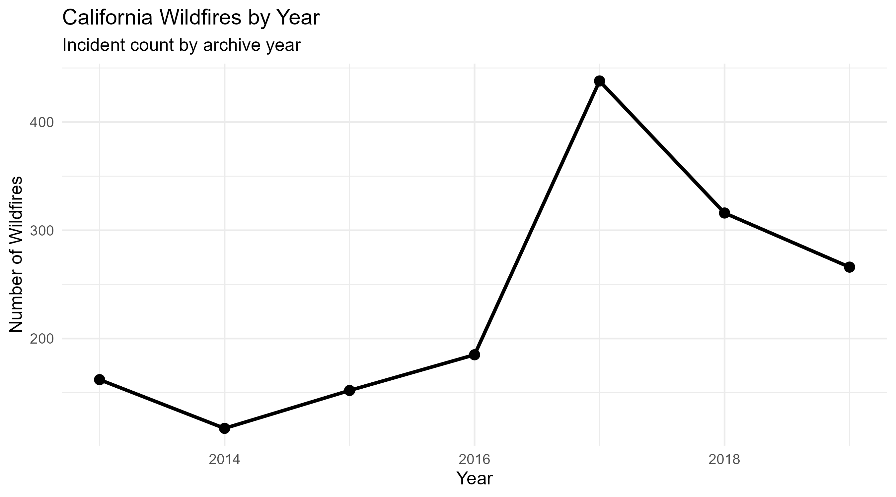
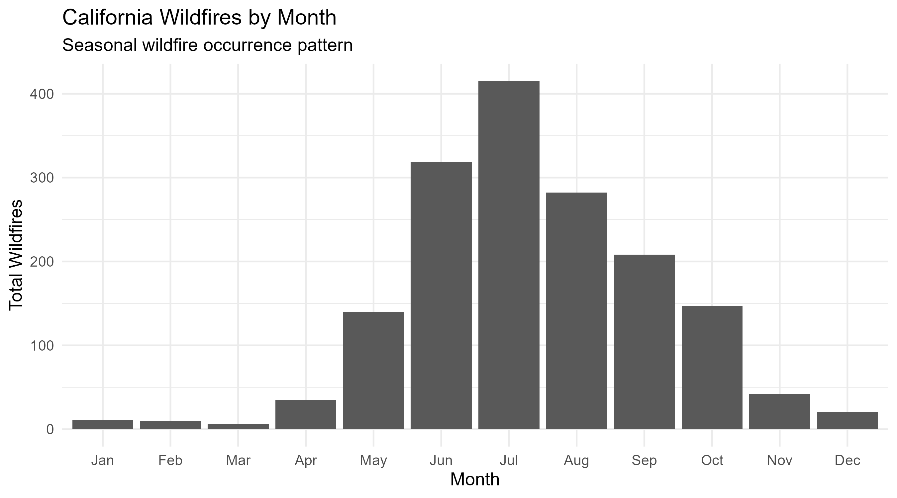
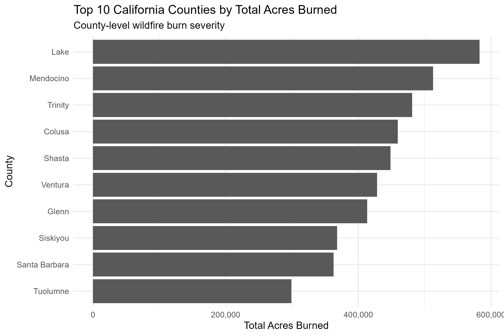
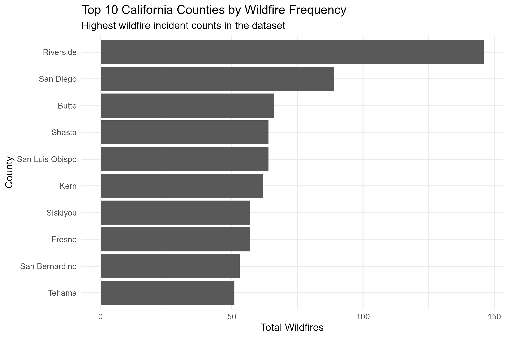

R · ArcGIS Online · 2013–2019
California Wildfire Spatial Analysis
Cleaning incident records in R, summarizing wildfire patterns over time, and mapping county-level fire frequency and acres burned.
Project purpose
Explore the temporal and geographic patterns in California wildfire incidents for 2013–2019 and communicate the results through statistical graphics and a public web map.
Original project outputs
Analysis & charts








Methodology
- Cleaned and analyzed California wildfire incident records using R.
- Summarized incidents by year and month, and compared county-level fire frequency and acres burned.
- Produced charts and GIS-ready summaries for use in ArcGIS Online.
- Joined county summaries to county boundaries and configured the interactive map.
Data & documentation
Wildfire incident records, county-level summaries, and California county boundaries. The public web map identifies the analysis period as 2013–2019. The original input dataset, full source citation, and R script are not included in this repository.
Interpretation & limitations
Fire frequency and acres burned describe different aspects of wildfire activity. County totals should not be interpreted as area-normalized risk, burn severity, or evidence of a causal relationship. The charts summarize the study period rather than current conditions.
The interactive map is public and owned by Bailey Rockholt. Its layer configuration includes county boundaries, fire frequency, and acres burned.
Explore the public map